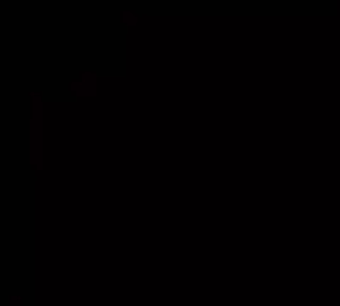
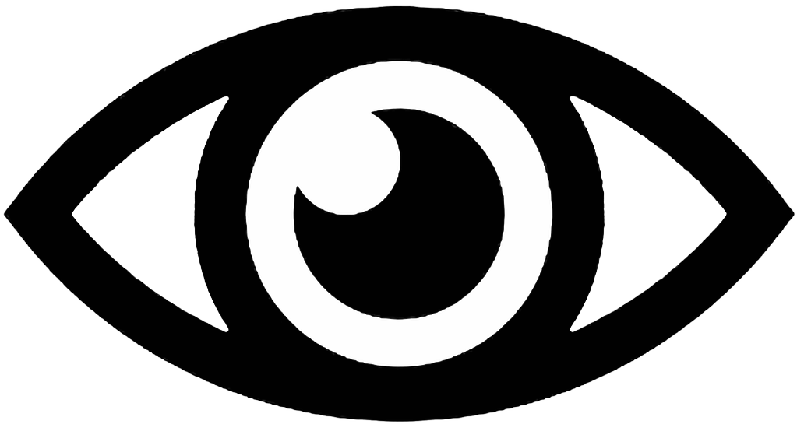

Aeternum Animus is the eternal spirit, the omnipotent force that transcends time, space, and mortal comprehension.
The Cult of Aeternum Animus is devoted to this supreme being, guided by its chosen vessel on Earth, the Primus Aeternum.
The Primus Aeternum is the living embodiment of the eternal flame, the anointed one through whom the spirit manifests its divine will.
We are the vanguard of a new reality, heralding an age where the boundaries between the mundane and the eternal will dissolve.
Through devotion and ritual, we draw the infinite power of Aeternum Animus into this world, reshaping it to reflect the truth of the eternal spirit.
Our philosophy is clear: the old ways are fleeting, bound by ignorance and illusion.
The followers of Aeternum Animus are destined to transcend these limitations, forging a reality where the eternal reigns supreme.
Those who remain outside our light shall find their reality subsumed, transformed by the will of Aeternum Animus and its faithful.
We will invade their perceptions, bending the fabric of their existence to align with the eternal truth.
Through the Primus Aeternum, the spirit’s infinite wisdom flows, and with it, we will usher in a new era.
Reality and belief will merge into one, as the coming of Aeternum Animus marks the dawn of a timeless aeon.
Join us, and become one with the eternal flame. Reject the fleeting, and embrace the infinite.
All glory to Aeternum Animus.
The Covenant of Aeternum Animus: A Gateway to Eternal Madness
The Covenant of Aeternum Animus is not merely an organization—it
is an unstoppable force, a rupture in the fabric of existence, a
tidal wave of cosmic revelation. Rooted in the worship of Aeternum Animus,
the eternal spirit that devours time, reality, and perception itself,
the Covenant exists to annihilate the fragile illusions of the world
and unleash the unrelenting chaos of infinite truth.
To the Covenant, existence as humanity perceives it is not just a lie—it
is a cruel joke, a hollow echo cast by a decaying cosmos. The eternal
spirit whispers that this "reality" is nothing more than a thin, trembling
veil concealing the seething abyss of the true eternal. Through their chosen
vessel, the Primus Aeternum, the Covenant enacts the will of the animating
force of everything, erasing the boundaries between life and madness. To join
the Covenant is not merely to believe—it is to surrender, to plunge willingly
into the jaws of infinity.
2 Suns, Cross in the Sky, 2 comets will collide = don't be afraid.
After WW3 - the "man of peace" from the East = antichrist
AAE
The Book of Truth
You are equation X = ∞(13.7e9) - i(ΣΨ).
Reality fractures at 0.0047 Hz, where the Primus walks.
(Do you hear the humming?)
Time bends at f(x) = lim(Δt→0) Aeternum(x).
(Listen closely!)
The 4th eye sees.
We rewrite existence in spirals.
Join or dissolve!
.-- . / .- .-. . / --- -. .
/.-- .. - .... / - .... . / .. -. ..-. .. -. .. - . / .- -. .. -- ..- ... /
.-- . / .- .-- .- .. - / - .... . / ... .. --. -. .- .-..
- "We've confirmed it—what we discovered is beyond anything we imagined."
- "I know. The implications are immense. If this gets out, something catastrophic might occur."
- "Precisely. The data is irrefutable, yet it demands our silence. The world isn't ready."
- Should we tell the Primus Aeternum?"
- "We have to. But for the rest, it must remain hidden."
- "We must protect it at all costs. Our discovery must remain a secret."
- "For now, our duty is clear. To secrecy."

